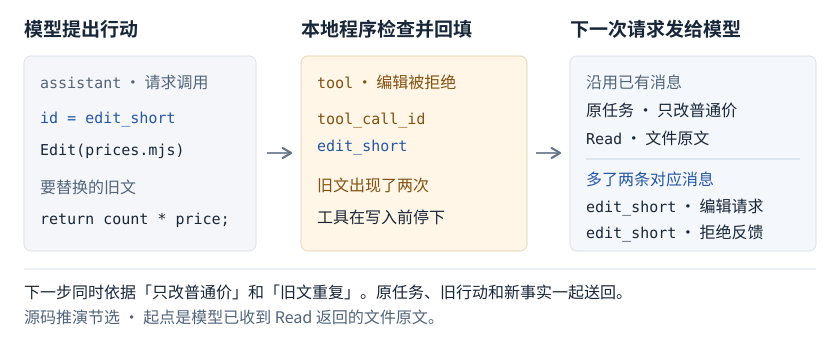
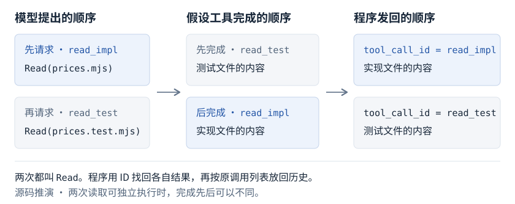

一次任务怎样跑完
模型、工具与结果回流
模型让 Edit 给普通价打折，工具却说同一行出现了两次。下一次请求会带上什么，才让模型有依据改对？
跟着一次失败的编辑走一圈
1.1 一行旧文，碰到了两个价格函数
你要把普通价打九折，会员价保持原样。数量为 2、单价为 100 时，两个函数应该分别算出 180 和 200。下文把程序里接起模型、执行工具和保存结果的这套运行机制称为 harness。先看 prices.mjs 的原文。
export function standardTotal(count, price) {
return count * price;
}
export function memberTotal(count, price) {
return count * price;
}假设模型先通过 Read 拿到源码，再让 Edit 把 return count * price; 换成 return count * price * 0.9;。看两个函数的返回值，工具能只凭这一行确定该改哪处吗？
old_string 在 prices.mjs 出现 2 次，不唯一。只改一处时，把周围未改动的文字同时带入 old_string 和 new_string。要替换所有匹配时请使用 replace_all。两处都匹配，工具在写入前停下了。文件里的两段原文仍然保留。模型想纠正下一步，先得知道上一次改动被拒绝了。
1.2 拒绝怎样变成下一次模型请求的一部分
设这次编辑的调用编号（ID）为 edit_short。顺着图看，先找这次行动，再找执行结果与原任务在哪里汇合。

RuoCun 把拒绝写成工具消息，并附上同一个 edit_short。这条消息加入本次任务的历史以后，还会随下一次请求发给模型。模型看到旧文重复和只改普通价这两件事，才有理由在旧文和新文里都带上 standardTotal 的函数声明，缩小到一个目标。它也可能作出别的选择。
先判断一下。假如终端打印了这个拒绝，但程序随后把读取文件时那份旧历史又发给模型，模型少了什么？
核对答案
它还看不到 edit_short 对应的拒绝，因而缺少匹配了两次、编辑尚未写入这两项事实。需要把对应的工具消息加进历史，再让请求带上这份更新过的历史。
接着走剩下的步骤。模型发起一次新的 Edit，把完整的普通价函数作为旧文，工具返回差异。模型再让 Bash 运行检查，查看两个价格，最后给用户一段回答。每次运行工具之后，刚才的行动和结果都为下次判断提供新依据。
{"standardTotal_2_100":180,"memberTotal_2_100":200}模型请求与工具执行
2.1 模型提交 Read 调用，程序校验后读文件
回到第一次读文件。模型把工具名和参数写在响应的 tool_calls 中，请程序调用 Read，并把 path 填为 prices.mjs。程序找到本地读文件的实现，也就是 Read 的处理器。参数和执行条件通过检查，文件内容才由处理器读出。
1 export function standardTotal(count, price) {
2 return count * price;
3 }
4
5 export function memberTotal(count, price) {
6 return count * price;
7 }
8 模型可以根据这份原文选下一步。程序负责读取、检查和执行，所以即使模型在文字里说“我已修改”，磁盘是否变化也要回到工具做了什么来核对。读文件的 Read、按旧文替换的 Edit、运行命令的 Bash 都通过这个接口接起来。工具的定义、注册和执行条件由《工具调用怎样落地》展开。
2.2 每次请求从会话取消息，附上当前工具接口
最开始，模型需要先知道目标和可用工具。读完价格文件，它又需要看到真实函数。主循环每次准备请求时，从同一份会话历史取当时的消息，再放入本轮可用的工具定义。
# 复制当前历史，本次请求使用一份独立的消息列表。
opts["messages"] = copy.deepcopy(session.messages)
opts["tools"] = api_tools() if api_tools is not None else registry.toApiTools() if context_hooks.request_preflight is not None:
try:
# 预检后使用返回的 opts，其中可以包含新目录快照或整理后的历史。
opts = await context_hooks.request_preflight(opts)messages 是这一刻的消息副本，有任务、过去的行动和结果。tools 则给出这次可调用的接口。读文件之前，消息里只有请求已有的信息。读回原文并记入历史以后，再请求模型时就能把原文也带过去。规则和工作目录等信息怎样加入这份输入，见《模型收到什么：system 装配、项目指令与动态事实》。
会话历史与结果回流
3.1 先保存助手的调用，再派发工具
程序收完模型响应后，先把助手消息留在会话里。以读价格文件为例，后面会有一条带源码的工具消息，历史也得记下当时请求了哪个工具、传了哪个文件。
assistant: dict[str, Any] = message
assistant["role"] = "assistant"
assistant["content"] = content
if saved_calls:
assistant["tool_calls"] = saved_calls
session.messages.append(assistant)
await save()
if events.on_assistant_saved is not None:
events.on_assistant_saved(assistant)
if not calls:
return TurnResult("complete")append 把助手消息加进当前列表，save 处理这份历史的保存。没有调用的最终答复也会记录，然后才从 if not calls 结束本回合。有工具调用时，程序接着派发，等它们返回。
3.2 工具结果写回历史，再发下一次请求
批执行器 executeToolBatch 处理本次响应提出的一批调用。Read 给出的是文件文本，Edit 可能给出差异或拒绝。主循环从批结果中取回工具消息，追加到同一份历史。
except UnknownToolOutcome as exc:
return TurnResult("outcome_unknown", str(exc))
# 批次已给出按调用 ID 配对的工具消息，追加到刚才的助手调用之后。
session.messages.extend(batch.messages)
if wait_control is not None and wait_control.pending and journal is None:
wait_control.rollback()
return TurnResult("failed", "TaskWait 需要会话保存接口。")
# 确认保存后，后续请求才能带上这次工具结果。
await save()图 1 的拒绝就进入了 batch.messages。extend 把它接到对应的助手调用之后。保存完再回到循环开头，复制更新后的 session.messages 到新请求。远端模型这时才收到拒绝原因。
3.3 从读取到试算，调用与结果逐轮累积
把刚才这条路线展开。左栏是程序即将发给模型的请求，中栏是那一刻新知道的事。读完一行，可以先猜右栏的下一步。
| 发给模型之前 | 历史中新增了什么 | 本例的下一步 |
|---|---|---|
| 任务刚开始 | 普通价九折，会员价保持原样。 | 请求 Read 取得文件。 |
| Read 返回 | 两个函数的原文。 | 尝试把那一行乘以 0.9。 |
| 第一次 Edit 返回 | 匹配两处，文件未改。 | 用整个 standardTotal 定位，再次编辑。 |
| 第二次 Edit 返回 | 普通价函数的差异。 | 请求 Bash 运行试算。 |
| 试算返回 | 相同输入下，普通价 180，会员价 200。 | 说明改动和检查结果。 |
表里五次请求都在推进同一个目标。从程序接手开始，到给出答复、等待或停止为止，这段执行叫一个回合，由 run_turn 负责。一次模型请求只占回合里的一步，它的响应还可以带一批工具调用。多次回合又能共享同一份会话历史，所以以后看到“这次请求”“这次回合”和“这次会话”，要先确认代码在说哪一层。
调用 ID 与结果配对
4.1 同名 Read 用各自的调用 ID 区分
把价格例子变一下。价格实现放在 prices.mjs，断言放在 prices.test.mjs。模型在同一个助手响应里要求各读一次，程序判断这两次读取能否并行。假设测试文件先读完，猜猜它的内容在下一次请求里应该跟哪个 ID。

图里 Read 是工具名，read_impl 和 read_test 才能指到具体行动。助手消息中的 id 与工具消息中的 tool_call_id 要一致，由 content 承载这次读取的结果。
[
{"role":"tool","tool_call_id":"read_impl","content":"实现文件的内容"},
{"role":"tool","tool_call_id":"read_test","content":"测试文件的内容"}
]再判断一处。如果第二个发起的 Read（读取测试文件）被明确拒绝，这条反馈应该挂在哪个 ID 下？
核对答案
还是 read_test。拒绝也是这次调用的结果。先完成的消息可以稍后列出，身份始终跟它对应的调用走。
4.2 按调用 ID 配对，按原调用顺序回填
两次调用如果都用了 read_impl，程序以后就很难把两份内容配回原处。派发前的检查用 seen 记住同一响应中已出现的 ID。它一旦发现重复，主循环随即结束并返回失败。
fn = call["function"]
call_id, name, args = call.get("id"), fn.get("name"), fn.get("arguments", "")
if (not isinstance(call_id, str) or not call_id or not isinstance(name, str)
or not name or not isinstance(args, str)):
raise ValueError("模型工具调用缺少id、名称或JSON字符串参数")
if call_id in seen:
raise ValueError("同一模型回答出现重复工具调用id")
seen.add(call_id)批执行器构造工具消息时，把自己的 call_id 写进 tool_call_id 字段。
tool_batch.py:80 · 工具反馈写回调用 ID
def _message(call_id: str, text: str, image: ImageData | None = None) -> ChatMessage:
message: ChatMessage = {"role": "tool", "tool_call_id": call_id, "content": text}返回整批反馈时，循环按原来的 calls 从 results 取值。代入图 2，即使 read_test 先存进 results，也会先取出 read_impl 的内容。这样后续仍按原请求顺序阅读，结果身份也没有改变。
return BatchOutcome([results[call_id] for call_id, _, _ in calls], incomplete, shell_failures)假设测试先读完，程序就用这份历史再问一次模型。助手消息列了两个 Read，当前却只有 read_test 的结果，read_impl 还没有回答。若按完成先后给结果分配 ID，测试内容甚至会被当成 prices.mjs 的实现。
RuoCun 让执行器等本批收尾，按各结果携带的 ID 配回原调用，再由主循环一次接进历史。「正常续跑要按调用 ID 收齐本批反馈，再发下一次模型请求。」即使两次读取可以并行，下一次请求仍要等较慢的一项。这个等待换来一组能一一对应的请求和结果。以后裁剪或恢复历史时，也要保留这组关系。
中断、拒绝与结果未确认
5.1 明确拒绝带原因回传，结果未确认则停下
先想一个更早的失败。模型忘传 path 时，执行器在参数校验处就能返回带原调用 ID 的错误，下一次模型可以补上文件路径。图 1 的 path 已经给对，问题出现在 Edit 处理器检查旧文时。处理器发现两个匹配项，在写入前抛出 ToolRejected，执行器捕获它并保留具体原因。
except ToolRejected as exc:
result = f"Error: {exc}"准确的原因让模型有依据修正。下面是图 1 里的工具消息，沿用示意 ID，content 取对应工具反馈。
{
"role": "tool",
"tool_call_id": "edit_short",
"content": "Error: old_string 在 prices.mjs 出现 2 次，不唯一。只改一处时，把周围未改动的文字同时带入 old_string 和 new_string。要替换所有匹配时请使用 replace_all。"
}模型可以把完整的普通价函数交给 Edit 定位。本例要保留会员价，选择全部替换会改动会员价。继续沿着案例：局部匹配后，工具返回了这样的差异。
查看改对后的 Edit 参数
{
"path": "prices.mjs",
"old_string": "export function standardTotal(count, price) {\n return count * price;\n}",
"new_string": "export function standardTotal(count, price) {\n return count * price * 0.9;\n}"
}- 2 return count * price;
+ 2 return count * price * 0.9;把故障挪到写入之后。假设 Bash 给价格检查日志追加一行，随后程序保存工具结果时报错。把它当作普通错误交给模型重试，日志里就可能出现两条相同记录。这个时候，缺的是能确认原操作结果的证据。
tool_batch.py:304 · 工具结果的保存与确认
if journal is not None:
try:
if image is None:
saved = (ShellToolOutput(result, failed=shell_failures[call_id])
if call_id in shell_failures else result)
await journal.result(call_id, saved)
else:
await journal.result(call_id, result, image)
except Exception as exc:
if not effect:
raise
raise UnknownToolOutcome(
f"工具结果保存未确认（{type(exc).__name__}），已停止；请核实原操作。"
) from exc这里的 journal.result 负责保存此次调用的结果。遇到保存异常时，带持久副作用的调用进入 UnknownToolOutcome，主循环以 outcome_unknown 结束本轮。「副作用结果未确认时，先停止续跑并核实原操作。」代价是自动流程暂时中断。核对日志有没有那一行以后，才有证据决定是否要补写。
5.2 响应未收完整，主循环先拦住工具派发
如果模型响应只送来了 {"path":"prices.mjs","new_string": 就断开，后半段还没有收到。这时 Edit 处理器没有机会检查旧文。主循环判断本次响应的状态，先处理未完整的返回。
if response is None or response.status != "complete":
failure = (response.error or "模型回答未完成，工具未执行。" if response is not None
else f"模型请求失败：{type(request_error).__name__}")
if (stream.exposed or content or message.get("tool_calls") or
response is not None and (response.status == "partial" or response.deltas)):
if content:
session.messages.append({"role": "assistant", "content": content})
await save()
return TurnResult("failed", failure)客户端用 partial 表示只收到部分响应。主循环保留已有正文，然后让当前回合以 failed 结束。取消也在派发前单独处理。客户端把响应标为 complete 时，程序才继续检查调用身份、参数和执行条件。怎样根据分段传来的内容作出这个判断，到第三篇看响应接收的边界。
如果执行器在等待并发批次时被取消，它会设置取消信号，先让已经开始的工具和结果保存有机会收尾。尚未开始的调用可以停下，已经发生的写入还需按实际结果核对。
回合停止与任务验收
6.1 无调用可结束回合，两种价格由试算核对
模型可以在收到试算输出后，只回答“已给普通价打折，会员价保持原样”。在响应完整、有正文、没有后续工具调用时，主循环保存这条回答，并返回 TurnResult("complete")。
| 程序实际试算 | 模型最后只回答“完成” | 这组输入的结果 |
|---|---|---|
普通价 180，会员价 200 | 当前回合可以正常结束。 | 两个价格符合要求。 |
普通价 180，会员价 180 | 当前回合也可以正常结束。 | 会员价错了，需要回到文件核对。 |
所以看到 complete，先辨认它是在说一次模型响应收完了，还是这一回合已经结束。「没有后续工具调用可以结束回合，价格结果仍靠试算验收。」若要覆盖其他输入，还需相应的验证证据。回合遇到取消、等待、请求失败或显式上限，也会交还控制权，各有自己的状态。后续《怎样判断任务真的完成》会进一步组织这些证据。
学习效果检测
7.1 判断工具回传、调用身份与回合状态
先自己推一遍，再展开详答。
第1题： 交接时终端还留着 Read(notes.md) 的输出“截止周五”。下一次请求的消息列表只有原任务和带 id=r7 的助手调用。模型这时凭什么知道截止日？请指出缺哪条消息，修好后该检查哪一份请求。
展开详答
终端证明读文件取得了这句话。请求里还缺这次读取的工具消息，所以模型不能凭这份请求得知周五。把原回包按 tool_call_id=r7 配回助手调用，确认实际发出的下一份 messages 既有任务也有该回包。屏幕上再打印一次不会补上这条记录。
第2题：同一助手响应提出Read实现和Read测试，ID分别为 read_impl、read_test。测试先完成，应该把它的内容填进哪个ID？当前RuoCun会怎样组织最终结果列表？
展开详答
测试结果仍填入 read_test，不能按谁先返回决定身份。当前执行器以ID保存结果，再按原调用列表组织返回，所以本例仍先列实现结果，再列测试结果。完成先后、身份配对、列表顺序是三个需要分别判断的问题。
第3题：Edit因旧文出现两次而拒绝。请按顺序说出：谁识别拒绝、谁把它转换为反馈、消息带哪个身份、下一次模型请求增加了什么？
展开详答
Edit处理器识别重复匹配并停止本次修改；批执行器捕获ToolRejected，把原因变成Error结果文本，并带回原Edit的调用ID。主循环把这条tool消息加入历史并保存。下一次请求因此带着“旧调用没有成功、原因是旧文重复、需要补足上下文”的信息，模型才有依据提出修正。它仍需根据只改普通价的目标选择，不能自动改为全部替换。
第4题：网络已流出工具名Edit及半份JSON，响应状态为partial；另外一个场景是响应完整但两次调用用了相同ID。两种场景能否先试着执行，再让工具决定？
展开详答
两次都不会派发工具。客户端明确返回 partial 时，主循环会先保存已收到的正文（如有），再以 failed 结束本回合。仅有未交付有效增量且满足重试条件的请求故障才可能进入恢复流程。另一次响应虽然完整，重复调用 ID 仍会被 _safe_calls 拦下，因为结果无法找到唯一的配对对象。
第5题：检查返回普通价180、会员价180，随后模型只回答“完成”，没有tool_calls。请分别判断本次响应、任务处理回合和业务目标的状态。
展开详答
若响应本身收取完整，它可以是完整响应；助手没有后续调用，当前 run_turn也可以返回complete。但会员价应为200，业务目标仍未通过。合理修正是核对当前文件，恢复会员价并重跑相关检查。程序返回complete这一事实，不能替代对价格结果的判断。
模拟面试官提问
8.1 Agent 开发实习
独立核心题
RuoCun怎样把一句代码修改需求推进成有结果可核对的任务？
展开参考回答
口述回答：模型根据当前目标和历史提出下一步，比如先读文件。程序执行Read，把原文作为工具消息交回下一次请求；模型再提出Edit，程序保存修改并回传差异。检查结果也按同样方式回流，模型据此继续修正或回答。主循环把这些往返接起来，实际结果则由工具执行取得。
机制依据：请求从当前 session.messages 取副本。完整的助手调用先入历史，批结果再加入同一份历史。正文“从读取到试算，调用与结果逐轮累积”的表格展示了这段变化。
适用边界：Read→Edit→检查是本例路线，模型可根据实际反馈改变行动；无调用结束回合，也不等于业务验收已经自动通过。
工具输出已经展示给用户，为什么还需要显式回填消息？
展开参考回答
口述回答：用户看见输出，与模型收到信息是两条路径。模型下一次只根据请求携带的内容继续，所以程序必须把结果装成对应调用的tool消息，再带进下一次请求。只打印到终端，模型可能仍在依据旧信息判断。
机制依据：session.messages.extend(batch.messages)把反馈加入历史，后续 copy.deepcopy(session.messages)取走新状态。调用ID进一步说明这份信息是在回答哪次行动。
适用边界：保存与入请求也要区分：持久保存支持后续接续，当前模型能否消费结果，要看下一次请求实际带了哪些消息。
重点追问链
主问：价格修改里，Read完成后为什么还要再请求模型？
展开主问回答
口述回答：Read只取得内容，没有决定如何满足折扣要求。下一次请求让模型结合原始目标和实际函数提出修改，再由程序执行。工具负责取得或改变事实，模型负责根据这些事实选择下一步。
依据与条件：当前历史必须同时带着用户目标、Read请求及其结果；只回“读取成功”不足以支持精确引用原文。
追问1：Edit拒绝以后，模型凭什么能把请求改对？
展开追问1回答
口述回答：拒绝会成为原调用的反馈，明确告诉模型旧文重复，需要补上下文。下一次请求带着它，模型才有依据把普通价函数声明和函数体一起放进旧文、新文。
机制与边界：工具识别、反馈回流、模型修正分别发生，清楚反馈不保证模型必然修好。具体定位与替换规则可关联《文件编辑：找准目标，保留已有修改》。
追问2：检查结果是180／180，但模型说完成，你怎样判断？
展开追问2回答
口述回答：回合可以结束，需求仍有一项失败，因为会员价应为200。我会根据结果回到当前代码核对会员函数，修复后再检查，而不是把complete当作验收结论。
关联：本篇的状态与价格反例已经足够判断；完整验收证据组织见完成判断篇。
8.2 Agent harness 岗位
独立核心题
一个响应里的多个同名调用，怎样和各自结果保持一致？
展开参考回答
口述回答：给每次调用保留独立ID，结果用tool_call_id指回它。工具名说明能力类型，无法区分两次Read。当前执行器以ID记录结果，最后按原调用列表组织返回消息，所以并行完成顺序不会改变结果身份。
机制依据：_safe_calls在派发前拒绝缺失或重复身份；_message回填ID；返回批结果按 calls从 results取消息。
适用边界：ID合法保证有可配对的身份，不证明结果内容正确，也不表示所有调用都可并行；后者由工具执行约束决定。
为什么不能收到半份参数就开始执行工具？
展开参考回答
口述回答：流出的片段还不是完整调用。后面可能继续补参数，也可能断流或取消。RuoCun先判断响应是否完整，再整理调用和派发；partial里的正文可以保留，但半份工具参数不应该变成真实副作用。
机制依据：未完整响应和取消的返回路径位于助手调用保存与 executeToolBatch之前，正文展示了这一接缝。
适用边界：完整性检查之后仍需参数、权限和执行条件检查；响应完整只说明可以继续处理。
重点追问链
主问：两个Read都叫 read_1，为什么不能先执行再补ID？
展开主问回答
口述回答：调用身份在行动与结果之间要保持一致。先用重复ID执行，后面再补就失去了原助手请求与结果的稳定对应。当前程序会在派发前拒绝这份响应里的重复ID，让身份问题停在执行之前。
依据：_safe_calls维护seen集合；这与工具参数是否合法是不同检查。
追问1：一个 Read 成功，另一个明确拒绝，为什么两条结果都要回填？换成 Bash 已经可能写了日志，却无法保存结果，又该怎么处理？
展开追问1回答
口述回答：明确拒绝已经回答了这次 Read。保留原因和原调用 ID，模型才知道缺哪份内容、该换参数还是改路线。Bash 的日志可能已经写入，应先停止续跑、核实原操作，否则重试可能追加第二条记录。
机制依据：ToolRejected 转为错误文本，_message 为它附上原 ID，批执行器再按原调用顺序取出反馈。带持久副作用的调用无法确认已保存结果时，执行器抛出 UnknownToolOutcome，主循环停止。
追问2：模型没有再调工具，harness就能把项目标为通过吗？
展开追问2回答
口述回答：只能据此结束当前普通执行回合。是否通过要核对用户要求和真实证据，像价格任务要分别看普通价与会员价。工具调用结束、回合结束和业务验收是不同层次。
关联与边界：完整验收体系由完成判断篇承接；本篇不把状态字段写成自动质量保证。
这一篇带走什么
一次任务可以问模型多次，由模型提出下一步，程序检查并执行调用，再把工具结果写进会话历史，带到下一次请求里。
- 正常续跑时，同一批调用先按 ID 收齐结果，再按原调用顺序写回历史。即使两次读取能并行，下一次请求也要等较慢的一项，才能同时带上本批的完整反馈。
- 明确拒绝带着原因和原调用 ID 回传，模型据此决定是否修正。写入可能已经发生而结果未确认时，主循环先停下。核实原操作可以避免把一次写入做成两次。
- 响应完整、有正文且没有工具调用时，回合可以返回
complete。确认任务是否达标，要核对实际产物和执行结果，例如改价后的两个试算值。
下一份请求带回拒绝反馈，模型才有依据改参数。如果发生变化的是文件所在的执行目录，模型又该从请求里的哪条消息得知？接着对照切换目录前后的两次请求。